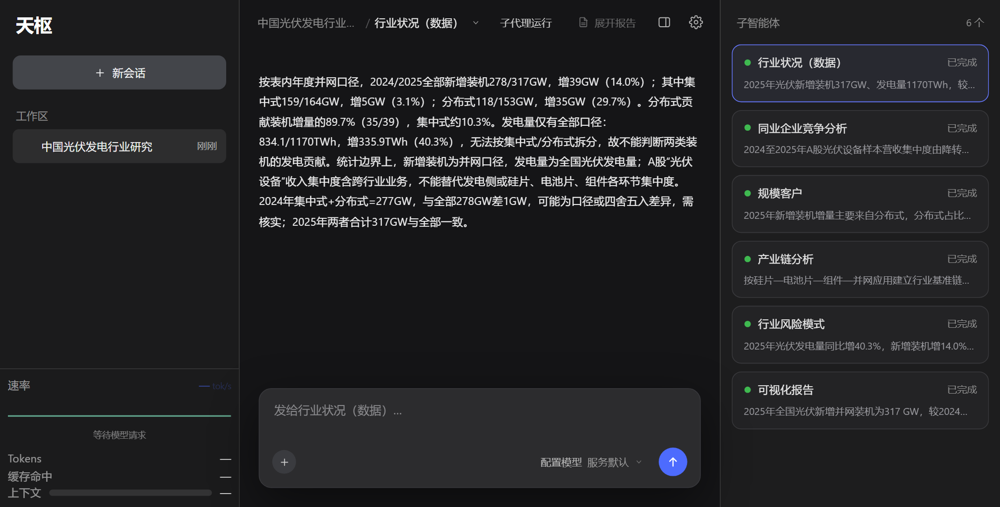
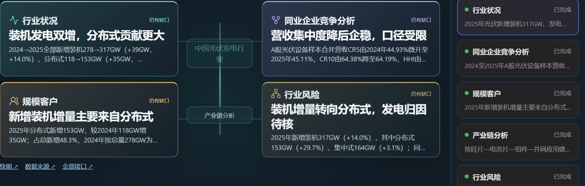
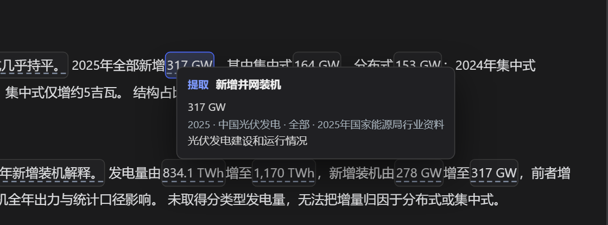

<!DOCTYPE html><html lang="zh-CN"><meta charset="utf-8"><style>
*{box-sizing:border-box}html,body{margin:0;width:1200px;height:1600px;overflow:hidden}body{background:#0e1418;color:#f2f5f3;font-family:'Microsoft YaHei UI','Microsoft YaHei',sans-serif}main{width:1200px;height:1600px;position:relative;padding:42px 54px 30px;background:radial-gradient(ellipse at 94% 8%,#163137 0%,transparent 34%),#0e1418}header,footer,.tagline,.fighead,.bottom{display:flex;align-items:center;justify-content:space-between}.mono{font-family:Bahnschrift,'Segoe UI',sans-serif;letter-spacing:2px}.cyan{color:#75ddc8}.blue{color:#8eb9fa}header{font-size:17px;color:#d3e1df;border-bottom:1px solid #426062;padding-bottom:15px}header b{color:#75ddc8}.brand{position:relative;display:flex;align-items:center;justify-content:space-between;height:185px}.brand h1{font-size:114px;letter-spacing:2px;line-height:1;margin:0 0 4px;font-weight:800}.brand .en{font-size:15px;color:#89aaa8;letter-spacing:5px}.network{width:535px;height:160px;overflow:visible}.desc{font-size:38px;font-weight:bold;margin:0;line-height:1.4}.tagline{margin:9px 0 22px;color:#b2c4c9;font-size:19px}.tagline .mono{font-size:13px;color:#78aaa8}.hero{background:#141c20;border:1px solid #45656a;border-radius:9px;overflow:hidden}.fighead{padding:10px 16px;background:#18262c;border-bottom:1px solid #34494e;font-size:15px}.fighead small,.cap{font-size:13px;letter-spacing:1px;color:#a4babe}.dot{display:inline-block;width:8px;height:8px;border-radius:50%;background:#75ddc8;margin-right:9px}.hero img{width:100%;height:525px;display:block;object-fit:contain;object-position:center 48%}.features{margin-top:23px;display:grid;gap:18px}.feature{display:grid;grid-template-columns:300px 1fr;gap:24px;align-items:center;border-top:1px solid #37494f;padding-top:18px}.feature h2{font-size:31px;margin:4px 0 9px;line-height:1.35}.feature p{font-size:18px;line-height:1.65;margin:0;color:#b7c8cb}.over{font-size:12px;letter-spacing:2px;font-weight:bold}.screen{border:1px solid #384c55;border-radius:7px;background:#142029;overflow:hidden}.screen img{width:100%;height:204px;object-fit:contain;display:block}.screen.e{background:#1b1b1c}.screen.e img{object-fit:cover;object-position:center}.case{margin-top:22px;border-block:1px solid #3a555b;padding:15px 0;display:grid;grid-template-columns:1fr auto;align-items:center;gap:30px}.case .v{font:600 45px/1.1 Bahnschrift,'Segoe UI',sans-serif;color:#a9e3d6}.case h3{font-size:21px;margin:0 0 4px}.case p{font-size:15px;margin:0;color:#b6c8ca}.case .v small{font-size:18px;color:#b7c9cc}footer{margin-top:14px;color:#8fa4a9;font-size:13px}.route{font-size:15px;color:#aed5d1}
 .feature{grid-template-columns:360px 1fr}.feature p{font-size:27px;line-height:1.5;color:#d6e2e4;text-wrap:pretty}.feature h2{font-size:36px;color:#85dfcb}.feature:nth-child(2) h2{color:#9ac7ed}.tagline{font-size:25px;color:#cddee0}.fighead{font-size:20px}.case p{font-size:24px}.case h3{font-size:29px}footer{font-size:18px}.brand{height:166px}.case{margin-top:18px;padding:11px 0}.feature{padding-top:15px}</style><main><header><div><b>工行企业命题</b>　/　命题二</div><span class="mono">行业研究与企业经营分析</span></header>
<section class="brand"><div><h1>天枢</h1><div class="en mono">TIANSHU</div></div>
<svg class="network" viewBox="0 0 535 160" aria-label="四路研究汇入风险复核并生成报告"><defs><pattern id="dots" width="16" height="16" patternUnits="userSpaceOnUse"><circle cx="1" cy="1" r="1" fill="#456266"/></pattern><linearGradient id="wire"><stop stop-color="#76dfca"/><stop offset="1" stop-color="#89adf4"/></linearGradient></defs><rect width="535" height="160" fill="url(#dots)" opacity=".5"/><g fill="none" stroke="url(#wire)" stroke-width="2"><path d="M28 80H70C95 80 95 20 128 20H224C268 20 280 80 320 80M70 80C98 80 98 58 128 58H224C265 58 278 80 320 80M70 80C98 80 98 102 128 102H224C265 102 278 80 320 80M70 80C95 80 95 140 128 140H224C268 140 280 80 320 80H487"/></g><g fill="#142329" stroke="#75ddc8" stroke-width="2"><circle cx="28" cy="80" r="8"/><circle cx="156" cy="20" r="7"/><circle cx="190" cy="58" r="7"/><circle cx="142" cy="102" r="7"/><circle cx="200" cy="140" r="7"/><rect x="318" y="69" width="22" height="22" rx="4" stroke="#8eb9fa"/><circle cx="488" cy="80" r="9" stroke="#8eb9fa"/></g></svg></section>
<h2 class="desc">AI 驱动的行业研究与企业经营分析助手</h2><div class="tagline"><span>四个智能体并行研究，结论可追溯至原文。</span></div>
<div class="hero"><div class="fighead"><b><i class="dot"></i>工作现场　<span style="color:#a9bfc6;font-weight:400">中国光伏发电行业调查</span></b></div></div>
<div class="features"><div class="feature"><div><h2>四线并行取证</h2><p>四组并行取证，<br>风险代理统一复核。</p></div><div class="screen"></div></div>
<div class="feature"><div><h2>从判断追到原表</h2><p>悬停看公式，右击查原文。</p></div><div class="screen e"></div></div></div>
<div class="case"><div><h3>带着证据继续追问</h3><p>引用数字，连同来源一起追问。</p></div><div class="v">278 <span style="color:#7196a1">→</span> 317 <small>GW</small></div></div>
<footer><span>中国光伏新增装机：2024—2025 年｜国家能源局</span><span class="mono"></span></footer></main></html>
